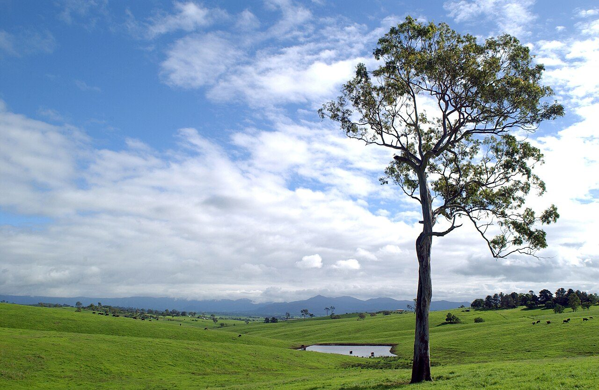
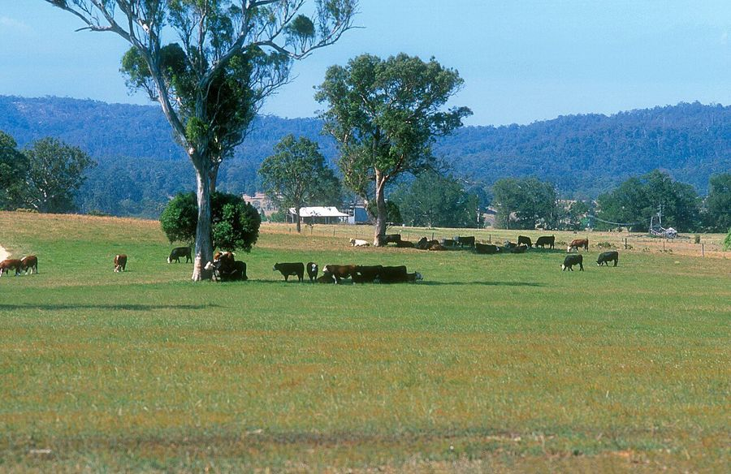
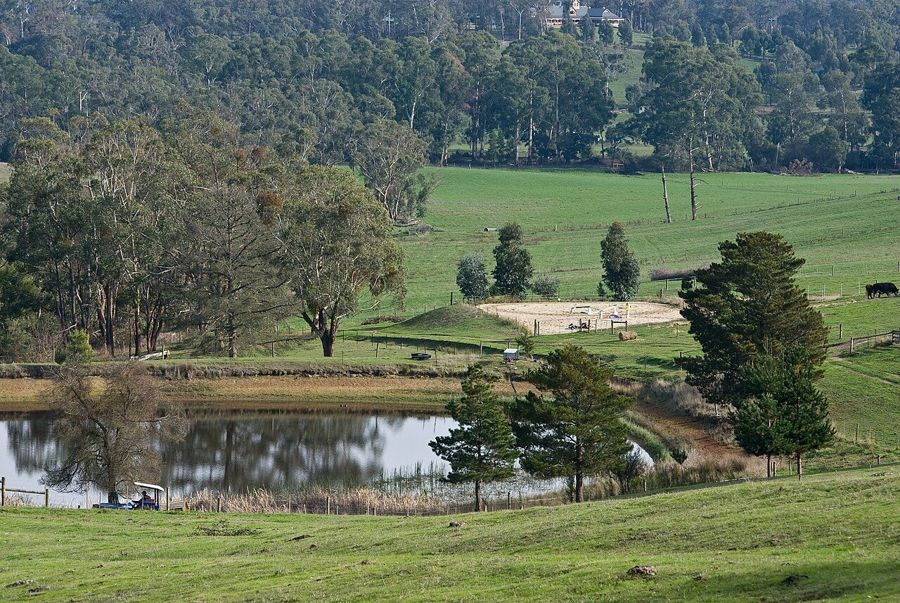
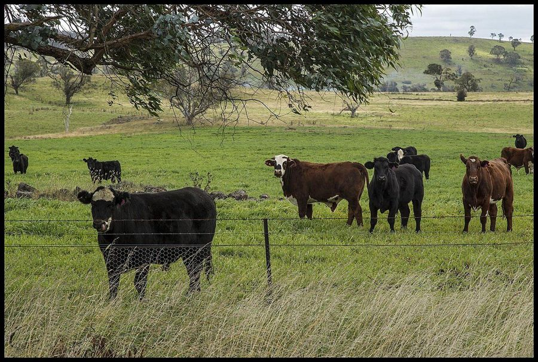
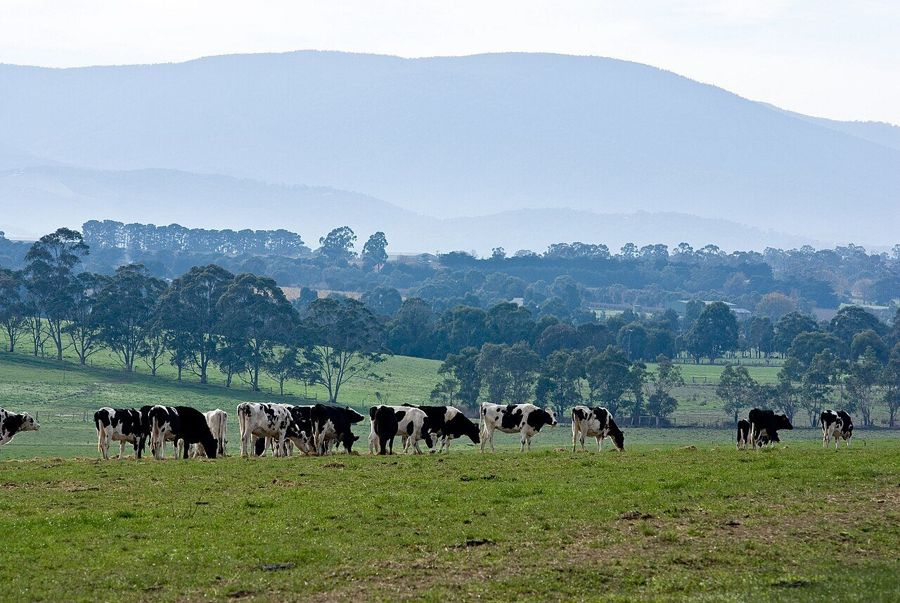
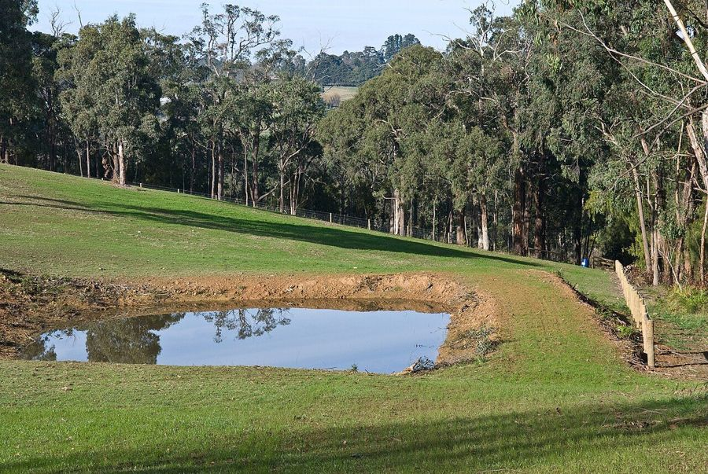

Land you'll love. Land that grows.
Every rural block of 10 acres and up, scored for long-term growth, priced against real sales and checked for what matters: a real town close by, water, and things to do.
What you're after
A real town close by, water, and things to do.
Every block is checked against the four things that make land worth owning, and growing in value.
- A real town within 40 minutesSupermarket, hospital and a 10,000+ town, by real drive time
- Things to doWineries, national parks and holiday towns like Stanthorpe
- WaterCreek or river frontage, dams, bores and reliable rain
- Cabin potentialZoning, holiday stays nearby and room for a cabin or two



Ways to search
Start with the shortlist.

Growth path–blocks todayWhere growth is headingCheap, 35–90 min from a cityNext to land set aside for suburbsRezonings nearbySee growth path → Must-haves–blocks todayTown, water, things to doReal town within 40 minWater on or near the blockParks, wineries, holiday townsSee must-haves → Great deals–blocks todayAsking well under similar blocksPriced against real salesOpening offer and walk-away pricePrice cuts tracked dailySee great deals → AlertsYour rules.Set your price, size, distance to town and rain. The app tells you when a new block matches.Set my rules →Today's top picks
The best blocks right now.
Tick every must-have, score high for growth, and priced under similar blocks.
On a growth path
See allCheap areas in the tree-change belt, or next to land the state has set aside for future suburbs.
☆ Watching
See allWhat changed
02 · Look closer
The market in charts.
Where the blocks are, what they cost and how they score. Tap any bar for the detail.
Swipe for more charts →
How it works
From listing to score, every morning.
Every rural block of 10 acres and up on Farmbuy and Farm Property, with price cuts and sales tracked.
Real drive times to towns and hospitals, water, rain, slope, flood, fire and zoning for each block.
Tested on 25 years of sales: cheap areas near a city or holiday town that hadn't boomed yet grew most.

A likely sale price from the most similar blocks, plus an opening offer and a walk-away price.
03 · The detail
Checked before it reaches you.
Every scan has to pass its data and page checks before this site updates. If anything looks wrong, the last good version stays up. Below: the daily process, how accurate the prices are, what the Growth score rewards and where the data comes from.
Swipe for more →
Questions
Plain answers.
What is the Growth score?
How accurate is the likely sale price?
Where does the data come from?
Can I put a cabin on a block?
How often is it updated?
Is this financial advice?
Search
Find your block.
Every rural block of 10 acres and up. Filter by price, size and state, or start from a shortlist.
Charts for these results Prices, sizes, states
Saved
Your shortlist.
Blocks you're watching, and the rules your alerts follow.
☆ Watching
My rules
What you're after. The "My rules" quick filter in Search uses these, and the phone app only sends alerts for new blocks that match them (Standouts always come through). Saved on this device.
Insights
The market, explained.
Is it time to buy, where growth has been, and how the scores are worked out.
Is it time to buy? Market pulse
By state
Checked every day from what's for sale (asking prices, price cuts, time on market, supply) plus NSW government sale prices month by month. When several turn down together, buyers have the upper hand.
Where the next big jumps could be 10x areas
How much has farmland gone up? Since 2004
Median sale price of farms over about 30 ha (75 acres), from every farm sale in Australia (Bendigo Bank Agribusiness, Australian Farmland Values 2026 and 2025). Prices are per acre and include houses and sheds.
| State | Median $/acre 2025 | Last year | 5 yrs, per year | 10 yrs, per year | 20 yrs, per year | $100k in 2005 is now |
|---|
What could a block be worth later? Calculator
Three what-ifs, not a forecast. Farmland growth slowed to 2.8% in 2025, the lowest in 12 years, and Rabobank expects about 2% in 2026.
Regions and councils Growth tables
| Region | State | $/acre 2025 | Last year | 5 yrs | 10 yrs | 20 yrs |
|---|
Growth is the average per year (compound). Tap a region to see growth by farm size.
Councils
| Council | State | $/acre 2025 | 5 yrs | 10 yrs | 20 yrs | $100k 20 yrs ago is now |
|---|
Councils with few sales jump around year to year. Trust the 10 and 20-year figures more than the 5-year one.
How busy is each area? Supply and sales
Months of supply is how long it would take to sell everything for sale at today's pace: under 6 is busy (prices tend to rise), over 12 is slow (buyers have the upper hand). Sold vs asking compares recent sale prices per acre with blocks the same size asking now.
| Area | State | For sale | Sold, 3 months | Months of supply | Market | Sales each month | Sold vs asking | Older sales on record | Sales each year |
|---|
NSW sale prices since 2001 By block size
From the NSW government's own sales records: the latest sale of every rural property of 10+ acres. Growth is per acre, per year, from 3-year pooled medians. Non-market sales are left out.
| Area | Sales | $/acre now | 5 yrs | 10 yrs | 20 yrs |
|---|
Recently sold 10+ acres
From Farmbuy and Farm Property sold listings. The price is the sale price when the agent shares it, otherwise the last asking price.
| Where | State | Acres | Price | $/acre | Kind | Sold |
|---|
Price guide by state Asking prices
| State | Listings | Median $/acre | Median price | Under $300k | $/acre bush | $/acre farm | $/acre with house |
|---|
Do small blocks grow faster? Research
Short answer: not usually. Small blocks cost more per acre than big farms, but over 10 years they have mostly grown at the same speed or slower.
- Australia-wide: ABARES put hobby farms at the slowest 10-year growth of any farm type, about 4% a year to 2024, against about 10% for big grazing and cropping farms (a burst of about 10% a year from 2020 to 2023).
- Smallest farm sizes in each region (75 to 250 acres): grew faster than their region's farms in only 13 of 39 regions (Bendigo Bank).
- Where small blocks did best: Adelaide Hills and Fleurieu (+16.6% in 2025), Hunter (+10.1%), and Tasmania, where 37 to 100 acre blocks grew 9.6 to 10.6% a year over 10 years.
- Queensland 2026 valuations: small rural home blocks rose 11 to 86% since the last valuation. Biggest: North Burnett +86%, Western Downs +72%, Lockyer Valley +66%, Noosa +43%.
- NSW: rural land values fell 0.4% in the year to July 2025, put down to weaker demand for lifestyle blocks.
- First half of 2026: Australia +7.6% vs a year before. QLD +11.9%, NSW +2.1%, VIC +7.7%, SA +9.5%, WA +20.9%, TAS −9.5%.
How the Growth score works Tested on history
- Tested on two decades, the Track Edge way: NSW government sales of 10–100 acre blocks, grouped into about 200 areas. The score was checked on 2002–05 → 2011–14 (years it was never tuned on) and on 2012–15 → 2022–25, including a shuffle test that it has to beat by a wide margin. Two things picked the winners in both decades: areas still cheap per acre against the state caught up fastest, and areas that hadn't boomed yet grew faster next decade (fast risers slowed down). Being close to a city, the coast or a holiday area paid off strongly in 2012–25 but not in 2002–14, so it counts for a bit less. It's still one of your must-haves. Wine regions made no difference either decade. Every state: the same check on the Bendigo Bank farmland figures for 256 councils (2005→2015→2025) found cheap councils caught up in all six states, and councils that hadn't boomed grew faster in all six. Queensland's own Valuer-General figures (every council since 2002) confirm the cheap rule strongly, but show early risers kept rising there, so the "hasn't boomed yet" points are left out for Queensland blocks. The top fifth of areas by this score grew about 8.6% a year in the older decade against 3.6% for the bottom fifth (5.2% for all areas), and 12.7% against 8.1% in the newer one. It beat all 2,000 shuffles in both decades. (Non-market sales such as family transfers are left out.)
- Location (about 23 points): city, holiday area, beach, a 10,000+ town, a town with the basics, a hospital. Drive times are real road times where the router has done them, otherwise straight-line × 1.3.
- Things to do (about 8): a national or state park, a wine region, holiday cabins and farm stays nearby.
- Water and land (17): creek or river from the listing or the state water maps (7), dam, bore or tanks (3), rainfall (3), size (2), gentle slope from terrain data (2). Very steep land loses points.
- Catch-up and momentum (34): area still cheap against the state (up to 20), area hasn't boomed yet over 10 years (3, not in Queensland), population growth (4: the state government's forecast to 2041 for Queensland, WA and Tasmania blocks, otherwise the last 10 years), market pace (4).
- Growth path (4, or 6 with two signs): a cheap area 35–90 minutes from a city (the tree-change belt, where NSW areas went up 10 times or more about two and a half times as often), or, in Queensland, inside or within about 3 km of the planned urban area, or near one of the state's chosen future growth areas; in Victoria, within 2 km of the Urban Growth Zone (land set aside for future suburbs); in South Australia, within 3 km of a rural-to-housing rezoning (a Code Amendment); in Western Australia, within 2 km of Urban Deferred land or 3 km of a region scheme change to Urban; in Tasmania, within 2 km of the Future Urban Zone. See "Where the next big jumps could be" at the top of this tab.
- Upside and price (10): subdivision (3) and price against similar blocks (7). Deal-breakers take points off: flood, protected vegetation, covenant, no right to build, leasehold, doubtful access, a suspiciously low price. The total is scaled to be out of 100.
- Must-haves: a 10,000+ town within 45 minutes (or a holiday town within 30 with a basic town within 20), water, a park, wine region, beach or holiday town close by, and no deal-breaker. ★ Standout = all of those, a score of 57+, and priced under similar blocks.
How the likely sale price works Tested on sales
- Each block is compared with up to 12 of the most similar blocks for sale: within 50 km first (then 120 km, then 250 km, then the state; blocks without a map point use the postcode district instead), including recent sales, similar size, and the same kind of land: bare bush, working farm, bare lifestyle block, or a block with a house.
- Each comparison block's price is scaled to this block's size (bigger blocks cost more in total but less per acre), and the middle value is the likely sale price. Stations over 20,000 acres are left out, because they trade as a different market.
- Then the block's own details: creek or river frontage adds 5%, power 4%. A covenant takes off 25%, no right to build 30%, leasehold 20%, doubtful access 15%, flood-prone 7%.
- Verdict: judged against the usual range of the similar blocks (their middle half). Inside the range is a fair price. Just under the low end is a good deal, and 15%+ under is a great deal. Less than half the low end is flagged "unusually cheap: find out why", because land that cheap nearly always has a catch. Up to 20% over the high end is a bit high, and more than that is overpriced.
- Likely sale price: asking prices are scaled down by 18% before they are used, because tested against real sales, blocks sell for about that much under asking. Real sales are used as they are.
- Opening offer = 93% of the lower of asking and likely sale price. Walk away above likely sale price plus 8%.
- How accurate is it? Tested on 3,073 real sales (each priced as if it were for sale, without itself): half sold within 33% of the likely sale price, and 33% within 20%. Land varies a lot, so treat it as a guide. A building and pest report, a title search and a look in person come first.
Costs and ways to earn Where the numbers come from
- Stamp duty is worked out with each state's 2026 general rates (WA uses its home rates when there's a house). First-home, young-farmer and primary-production concessions can cut it a lot, and foreign buyers pay 7–9% more. Check your state's revenue office before you sign.
- Other buying costs: conveyancing $1,000–$3,500, building and pest $400–$900, a boundary survey $1,500–$5,000 on bigger blocks.
- Council rates on rural land are usually 0.1–0.5% of the value a year, at least about $1,200.
- Making a bare block livable: off-grid solar and battery $35k–$55k (a grid connection can cost $40k–$150k a km), water tanks $12k–$25k, septic $5k–$20k, a shed $20k–$60k, approvals $5k–$20k, and a cabin or tiny home $60k–$180k.
- Selling later: agents charge about 2–3.5% plus $2,500–$15,000 for marketing.
- Short stays use real Airbnb listings near each block (Inside Airbnb, September 2026: Mid North Coast, Northern Rivers, Sydney, Brisbane, Sunshine Coast, Barossa, Tasmania, Barwon South West, Melbourne, Mornington Peninsula and Western Australia). Nights booked and earnings are Inside Airbnb's estimates for the last 12 months, before cleaning, fees and tax.
- Long-term rent is the median weekly rent of houses in the same postcode from new leases (NSW Fair Trading, October 2026; SA, March quarter 2026). Victoria and Queensland weren't reachable.
- Agistment is $5–$12 a head of cattle a week. The number of cattle is a rough guess from rainfall, so get a local agent's view. Leasing paddocks brings 2–5% of the land's value a year, hay $300–$800 a hectare in a good year, and camping hosts average about $10k a year. Solar farm leases pay $750–$1,500 a hectare a year, but only near a substation with spare capacity.
- All income figures are before costs, tax and council approval. Short-stay cabins and camping usually need council approval first.
Tools
Check, compare, buy well.
Price any listing from any site, and what to ask and check before you buy.
Check any listing
Found a block on Domain, realestate.com.au, Gumtree or Facebook? Paste the ad's words here. I'll read the size, price and town, then price it against everything in this scan.
Look and feel
Pick the colours and style you like. It changes straight away and is remembered on this device.
Colour theme
Corners
Headings
Before you buy Checklist
Ask the agent
- Is it still available? Has the price come down?
- Freehold or leasehold? (Western Lands lease in NSW, pastoral lease in WA, NT and SA)
- Is there registered legal road access, or only a track through a neighbour?
- Can I build a house? Is there a dwelling entitlement or a planning permit?
- Any covenant, Heritage Agreement or conservation agreement on the title?
- What did it last sell for, and when? Will they do vendor finance?
Check it yourself
- Flood and bushfire maps on the council's planning map, and the bushfire (BAL) rating.
- Vegetation rules: QLD vegetation management maps, SA Native Vegetation Act, NSW biodiversity values map.
- Mining, gas or petroleum leases: QLD Globe, MinView (NSW), GeoVIEW.WA, SARIG (SA).
- Water: bores, dams, rainfall, and whether a licence is needed.
- Distance to power, mobile coverage, the nearest town, hospital and school bus.
- Yearly council rates. Some Heritage Agreement land pays none.
Where else to look
- Domain and realestate.com.au rural sections block automatic scanning. Use "Check any listing" above for anything you find there.
- Council sales of land for unpaid rates (Walgett and Central Darling in NSW run these).
- Trust for Nature (VIC) and the NSW Biodiversity Conservation Trust sell covenanted bush below market.
About this app Data and limits
Photos (Wikimedia Commons, free licences): grazing country with a gum tree by Carl Davies, CSIRO; cattle below a mountain range, farm with a dam, and a farm dam by Nick Pitsas, CSIRO; cattle near Bega by Gregory Heath, CSIRO (all CC BY 3.0); cattle at Tenterfield by Sheba_Also (CC BY-SA 2.0).